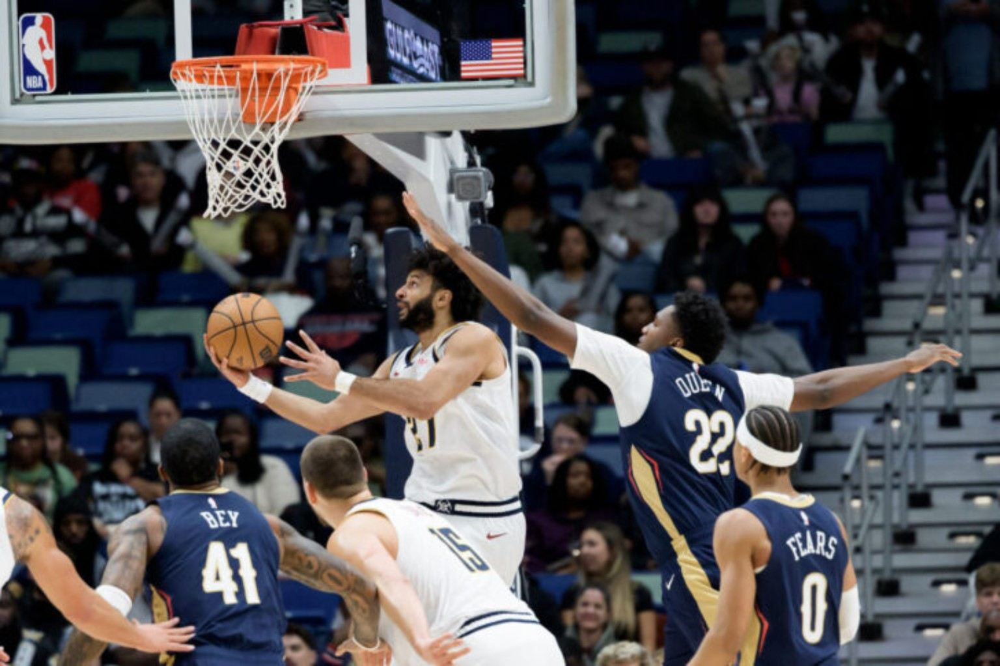
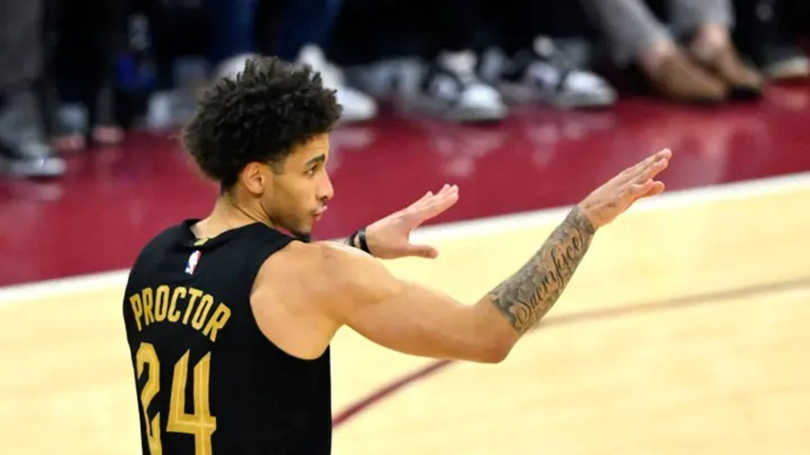
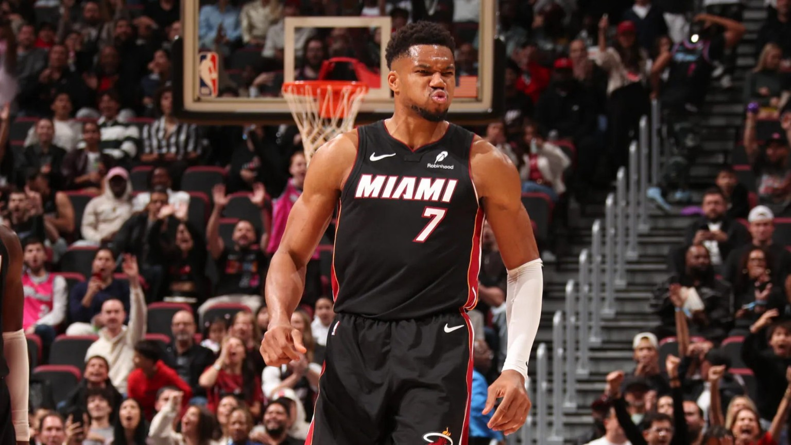
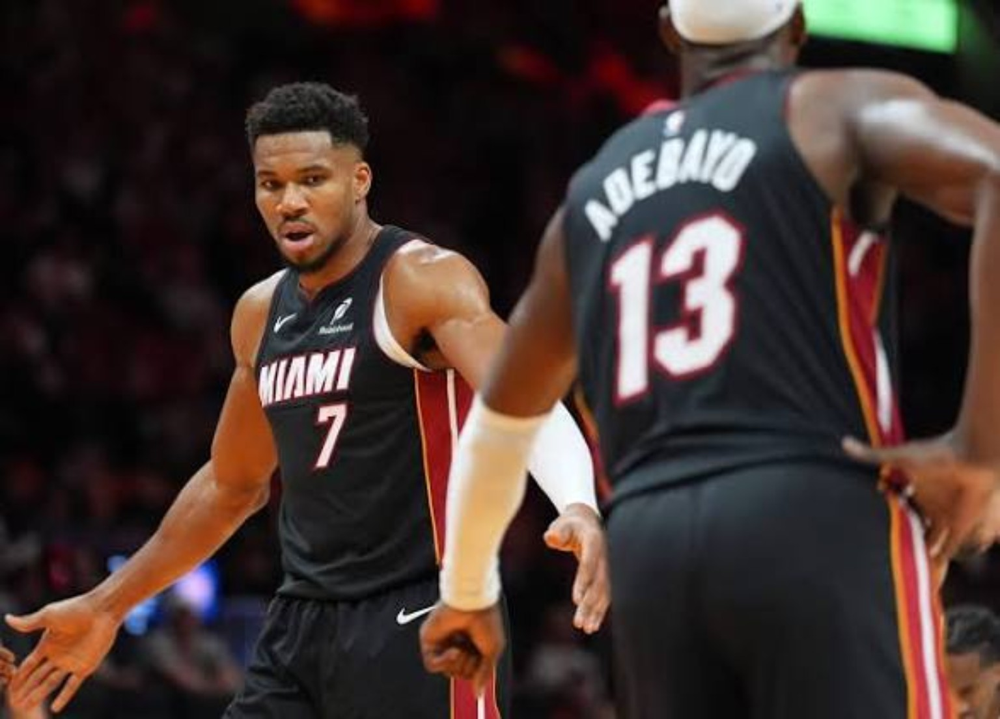
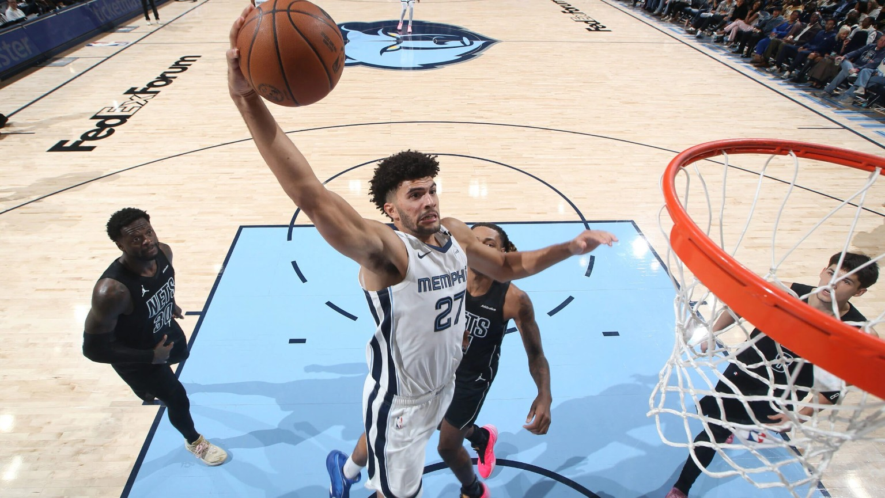
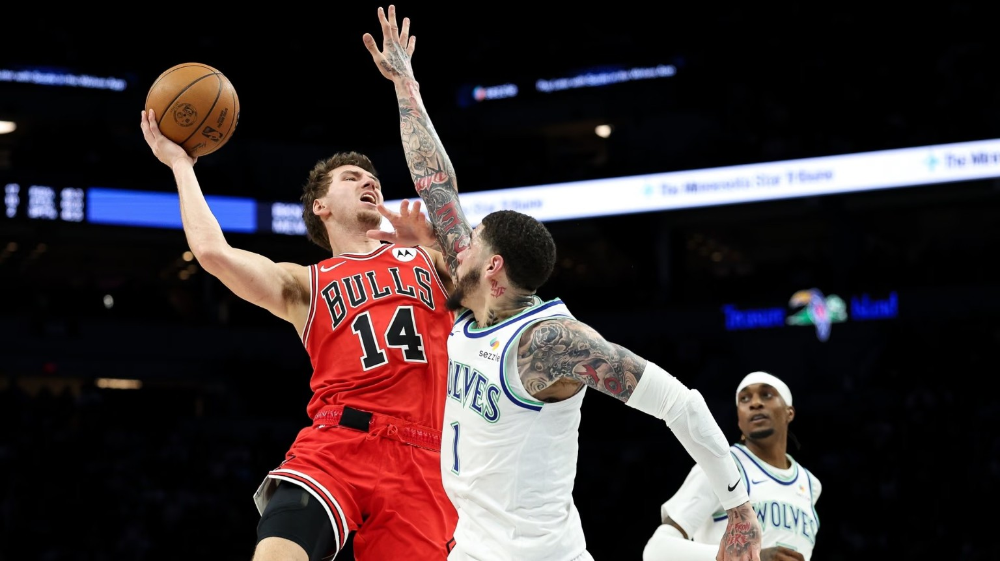

4 DA KULTURE · NBA NIGHTCAP · SATURDAY, NOVEMBER 14, 2026
FIVE GAMES.
NO EASY NIGHTS.
Giannis and Bam are learning how to own the same floor. Cleveland’s young group shocks Dallas. Chicago holds its nerve. Memphis shares the load. And Jokić keeps Denver composed.
ALL FIVE GAMES FINAL · DELUXE EDITION
GAME 01 · FINAL · NOVEMBER 14, 2026
JOKIĆ CONTROLS THE MARGINS AS DENVER SURVIVES ANOTHER PELICANS PUSH
DENVER 116 · NEW ORLEANS 108

Nikola Jokić: 26 PTS, 8 REB, 10 AST; Jamal Murray: 23 PTS, 7 REB, 9 AST; Christian Braun: 17 PTS, 7 REB. New Orleans: Zion Williamson 24 PTS; Yves Missi 8 REB, 4 BLK.
THE 4DK DEEP DIVE
Denver did not have to dominate every minute to control the terms of the game. The Nuggets won the opening quarter 29–23, but New Orleans stayed close through the middle periods, outscoring Denver 28–27 in the second and 31–30 in the third. That is the difference between a comfortable-looking final margin and the actual contest: the Pelicans repeatedly created chances to change the momentum, and Denver repeatedly found the right possession to keep them at arm’s length.
Jokić’s 26 points, eight rebounds and 10 assists are a reminder that his most important contribution often happens before the shot. His passing turns aggressive help into an opportunity for another Nugget; his scoring punishes opponents who stay home. Murray’s 23 points and nine assists gave Denver a second reliable decision-maker, while Braun added 17 points and seven boards. This is the kind of offensive balance that travels when the jumper is not always falling.
For New Orleans, Zion’s 24 points were not enough to erase the possession-by-possession execution gap. Missi’s eight rebounds and four blocks are meaningful signs of interior resistance, but the Pelicans need that rim protection to translate into cleaner defensive possessions and fewer repeat breakdowns. The issue is not whether New Orleans can generate a competitive stretch; it is whether it can sustain enough stops to turn one into a win.
TURNING POINT
Denver entered the fourth ahead 86–82 and won the final period 30–26. New Orleans remained close, but the Nuggets’ steadier late offense protected the lead.
WHAT IT MEANS
Denver improves to 7–4; New Orleans drops to 4–10. Denver is accumulating wins while refining its rotation. New Orleans must turn competitive stretches into complete games before the Western Conference race gets away.
GAME 02 · FINAL · NOVEMBER 14, 2026
PROCTOR’S BREAKOUT EXPOSES DALLAS AS CLEVELAND’S RESERVES TAKE OVER
CLEVELAND 127 · DALLAS 117

Cleveland: Tyrese Proctor 24 PTS, 11 REB, 10 AST; Mario Hezonja 22 PTS; Thomas Bryant 19 PTS, 11 REB. Dallas: Kyrie Irving 34 PTS; Cooper Flagg 18 PTS (6/19 FG, 0/6 3PT).
THE 4DK DEEP DIVE
This was more than a disappointing road loss for Dallas. Cleveland was operating with a severely reduced veteran rotation after travel disruption, and still found a way to score 127. That makes the defensive questions impossible to dismiss. The Mavericks were not beaten by a single unstoppable superstar; they were beaten by a group that moved the ball, trusted its opportunities and made Dallas defend beyond the first action.
Tyrese Proctor authored the headline performance: 24 points, 11 rebounds and 10 assists. The triple-double matters because it was functional, not ornamental. He organized Cleveland’s possessions, made the defense react and helped teammates flourish. Hezonja supplied 22 and Bryant added 19 points with 11 rebounds. Cleveland’s depth players were not merely surviving the minutes—they were dictating them.
Kyrie Irving answered with 34 points, but Dallas could not consistently turn his offense into momentum because stops were too scarce. Cooper Flagg finished with 18 on 6-of-19 shooting, missing all six three-point attempts. We should resist reducing a young player to one shooting night, but his shot selection and the team’s reliance on him deserve serious film-room attention. Dallas needs more connected defense and more offensive support than simply asking Kyrie to rescue each run.
TURNING POINT
The teams were tied 33–33 after one quarter. Cleveland then won the second 38–20, opening a 71–53 halftime lead that Dallas never fully erased.
WHAT IT MEANS
Cleveland reaches 7–7 and earns a statement about its depth. Dallas falls to 7–6; its playoff aspirations require better defense and more consistent help for Irving and Flagg.
GAME 03 · FINAL · NOVEMBER 14, 2026
THE GIANNIS–BAM PARTNERSHIP IS BECOMING A REAL PROBLEM
MIAMI 137 · DETROIT 117

Miami: Giannis Antetokounmpo 34 PTS, 14 REB, 8 AST, 3 BLK; Bam Adebayo 20 PTS, 5 REB, 4 AST; Klay Thompson 26 PTS; Davion Mitchell 15 PTS, 9 AST. Detroit: Cade Cunningham 33 PTS, 8 AST; Kevin Huerter 20 PTS.
THE 4DK DEEP DIVE
The most important story in Miami is not simply the latest 20-point victory. It is the way Giannis Antetokounmpo and Bam Adebayo are beginning to make sense together. Two powerful frontcourt creators can initially crowd the same areas, especially when opponents pack the paint and dare the supporting cast to shoot. Miami’s challenge has been to create a partnership rather than alternating possessions between stars. Against Detroit, the signs of progress were difficult to miss.
Giannis delivered 34 points, 14 rebounds and eight assists. The assists are as important as the scoring: they reflect an offense that can use his downhill force to bend the defense and then find the next man. Bam’s 20 points, five boards and four assists supplied the complementary layer. Bam can screen, facilitate and defend across positions; Giannis can overwhelm the rim and pressure the glass. Their fit becomes more dangerous when the offense moves immediately after the first defender commits.
Klay Thompson’s 26 points made the spacing argument tangible. If teams send extra bodies toward Giannis and Bam, Miami needs its shooters to make that decision expensive. Davion Mitchell’s 15 points and nine assists helped keep the ball moving. The combination gives Miami more than one route to a productive possession. The Heat can run through their stars without becoming predictable.
Detroit did not roll over. Cade Cunningham scored 33 with eight assists, and the Pistons put up 39 points in the opening quarter. But Miami’s defensive and offensive adjustments steadily reversed the game. Detroit’s 117 points show it had scoring answers; allowing 137 shows how little margin those answers provided. For a team with ambitions beyond merely making the playoffs, defending a star partnership without surrendering perimeter rhythm is a serious measuring stick.

TURNING POINT
Detroit led 39–37 after the first. Miami won the second 31–21, the third 35–26 and the fourth 34–31: a 100–78 advantage over the final three quarters.
WHAT IT MEANS
Miami moves to 7–6 with a fourth straight win and looks increasingly dangerous in the East. Detroit drops to 8–4, with a clear defensive lesson against elite frontcourt creation.
GAME 04 · FINAL · NOVEMBER 14, 2026
MEMPHIS FINDS A COLLECTIVE ANSWER AS COWARD SETS THE TONE
MEMPHIS 129 · BROOKLYN 110

Memphis: Cedric Coward 23 PTS, 12 REB, 4 AST; Taylor Hendricks 22 PTS; Cam Spencer 17 PTS, 8 AST; Cam Boozer 15 PTS, 8 REB, 5 AST. Brooklyn: Julius Randle 22 PTS; Day’Ron Sharpe 16 PTS, 11 REB, 5 AST.
THE 4DK DEEP DIVE
Memphis built this victory through a complete offensive effort rather than one player monopolizing the game. Cedric Coward’s 23 points and 12 rebounds set a physical tone; Taylor Hendricks contributed 22; Cam Spencer delivered 17 points and eight assists. Cam Boozer’s 15 points, eight rebounds and five assists added another layer of versatility. That distribution matters because it is harder to load up on an offense when the second and third actions keep producing quality looks.
The Grizzlies jumped ahead 38–23 in the opening quarter and followed with a 33–31 second period. By halftime, Brooklyn faced a 71–54 deficit. Memphis then won the third 32–30, keeping the Nets from turning a brief run into real pressure. This was a game about establishing control early and refusing to surrender it.
Brooklyn got 22 from Julius Randle and an active interior performance from Day’Ron Sharpe, who had 16 points, 11 boards and five assists. But those contributions were not enough to offset the collective defensive breakdown. Brooklyn must be able to protect the first half of games, not merely respond once the opponent has already established its preferred pace.
TURNING POINT
Memphis’s 38–23 first quarter created a 15-point cushion; the Grizzlies protected it through the middle periods and closed out a 19-point win.
WHAT IT MEANS
Memphis gains a valuable win and evidence that its younger contributors can share responsibility. Brooklyn needs stronger defensive organization and a more competitive opening stretch.
GAME 05 · FINAL · NOVEMBER 14, 2026
THE BULLS REFUSE TO BEND AS MINNESOTA’S RALLY FALLS SHORT
CHICAGO 117 · MINNESOTA 106

Minnesota: LaMelo Ball 19 PTS, 7 REB, 6 AST; Jaden McDaniels 18 PTS, 5 REB, 6 AST. Chicago won 117–106 behind a balanced team effort.
THE 4DK DEEP DIVE
Chicago’s win in Minnesota was built on an early statement and the discipline to withstand a counterpunch. The Bulls took the first quarter 29–17, creating an immediate uphill climb for a Timberwolves team that entered the night with expectations of controlling its home floor. Chicago added another 29 in the second, carrying a 58–45 advantage into halftime.
Minnesota did make its move. The Wolves won the third quarter 35–30, cutting into the deficit and forcing Chicago to respond. LaMelo Ball supplied 19 points, seven rebounds and six assists, while Jaden McDaniels added 18 points and six assists. Those are useful individual contributions, but the game demanded more consistent defensive stops from the entire group.
The Bulls’ answer came in the fourth: 29 points to Minnesota’s 26. That final stretch is why this should not be filed away as a game Chicago won only because it started hot. The Bulls maintained their offensive rhythm even after Minnesota increased the pressure. In the broader picture, these are the wins that make a team’s identity credible—winning on the road, managing a lead and refusing to hand the opponent an easy reset.
TURNING POINT
Chicago’s 29–17 first quarter forced Minnesota to chase. After the Timberwolves won the third 35–30, Chicago still won the fourth 29–26.
WHAT IT MEANS
Chicago earns a meaningful road win and shows it can close under pressure. Minnesota must examine why it surrendered such a large opening-quarter advantage and could not fully recover.
4DK PLAYER OF THE NIGHT
GIANNIS ANTETOKOUNMPO · MIAMI
34 points, 14 rebounds, eight assists and three blocks. His two-way command powered Miami’s 137–117 win and made the Giannis–Bam partnership the defining story of the night.
EDITORIAL VERIFICATION
Final scores cross-checked with the NBA schedule; player figures cross-checked with published game statistics. No unverified injury statuses are asserted. This is a prepared edition, not a claim of GitHub publication.